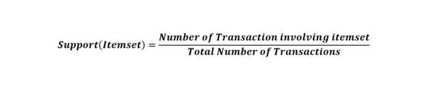
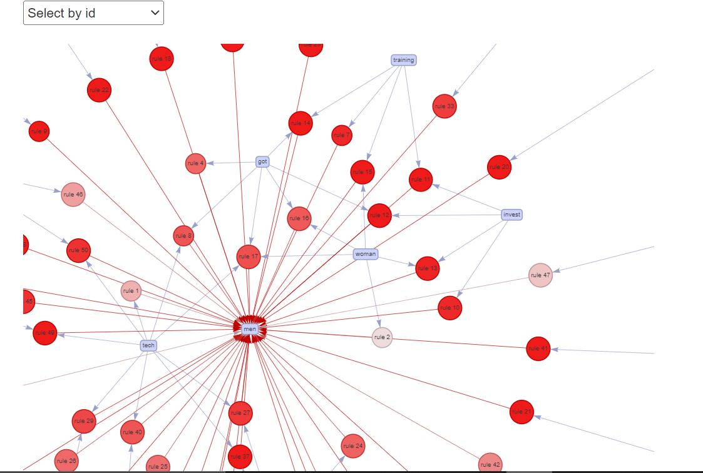
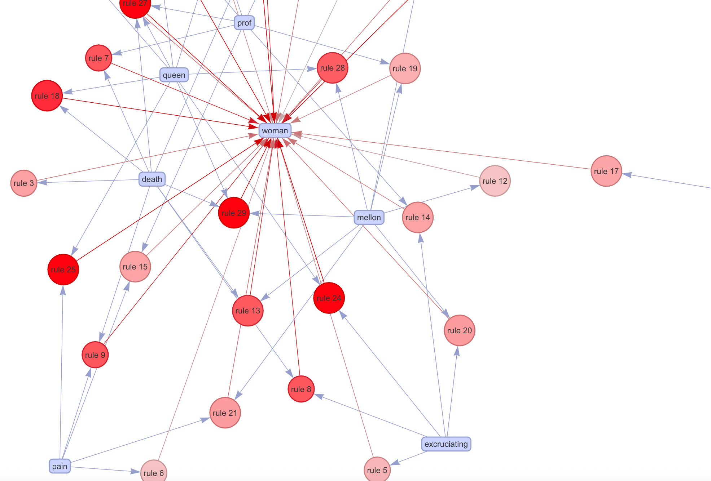
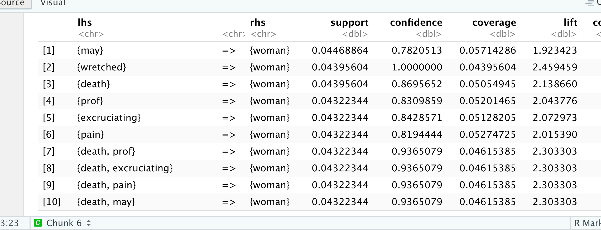
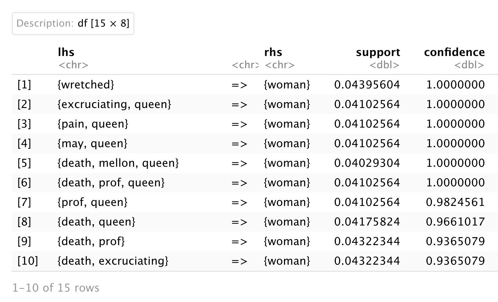
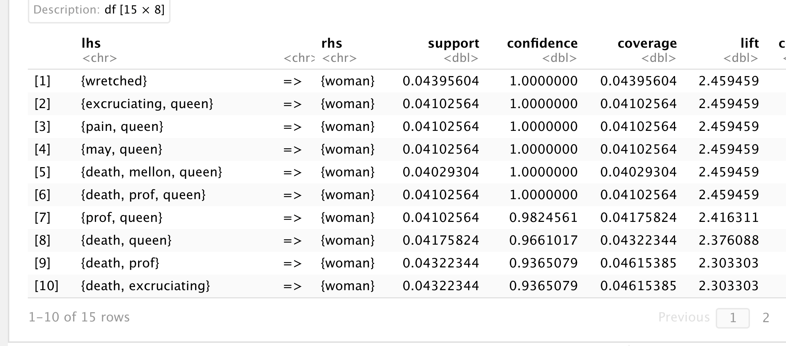

Analysis: Association Rule Mining
Association Rule Mining(ARM) is used to identify occurence pattern in a large dataset.
Association rule furthermore looks for interesting associations among the variables of the dataset.
It is undoubtedly one of the most important concepts of Machine Learning
and has been used in different cases.
The goal here is to how find what words goes together in a tweet using ARM.
ARM has two components,
- an antecedent (if) and
- a consequent (then)
if word men is used in a tweet then word bold is being used.
ARM is essentially used in Market Basket Analysis.
Market Based Analysis is one of the key techniques used by large relations to show associations between items.It allows retailers to identify relationships between the items that people buy together frequently.
ARM uses three measures to find out associations.
- Support: Popularity of item(s)
- Confidence: How often the rule is valid
- Lift: Tells the relationship between item(s)

- Lift = ~1: means support(Y) is independent i.e. It occurs same amount of the time irrespective of its associationwith anyother item. So can't find any association betweent those items'
- Lift > 1: means items in the set has strong possitive relationship. i.e X and Y occurs to together than Y alone.
- Lift < 1: means items in the set has negative relationship i.e. occurs of Y can diminish the occurence of X.
- Join Step: This step generates (K+1) itemset from K-itemsets by joining each item with itself.
- Prune Step: This step scans the count of each item in the database. If the candidate item does not meet minimum support, then it is regarded as infrequent and thus it is removed. This step is performed to reduce the size of the candidate itemsets.
Performing ARM on twitter text data, find the link to the ARM project is at the end of the page.
Result:ARM
Output from ARM is quite interesting,
Evaluating the algorithm by setting RHS = men and RHS = women, below are the interesting
association derived when,
RHS = men
The image below is the output from the analysis by setting men as consequent(RHS).

{talk,
world}
=> {men}
{training,
woman} => {men}
{invest}
=> {men}
{representation}
=> {men}
RHS = Woman
The image below is the output from the analysis by setting woman as consequent(RHS).

Sorted by support
Sorted by confidence
Sorted by lift
Isn't it intreseting?'
The algorithm literally forgot that the dataset is based on men and woman in technology because there were very less tweets related to tech and woman.